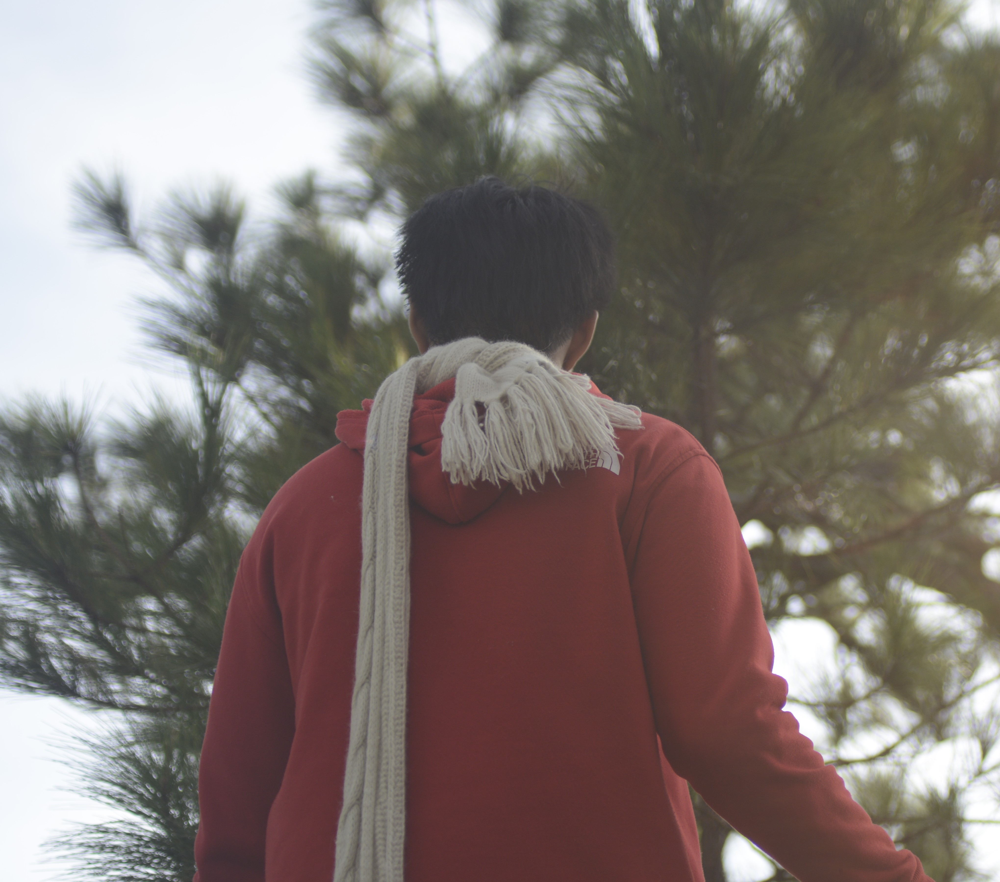
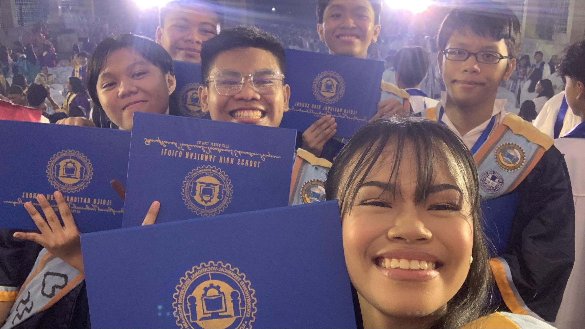
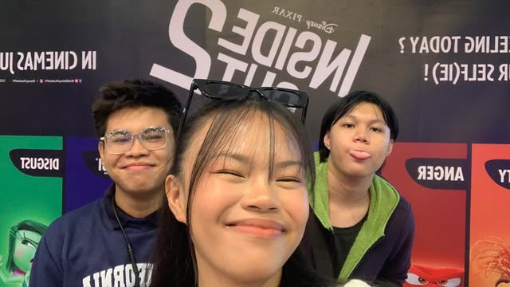
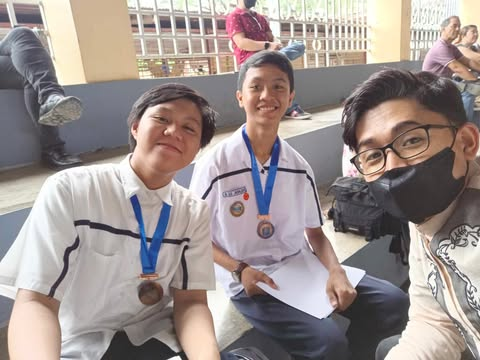
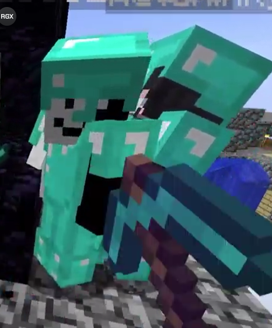
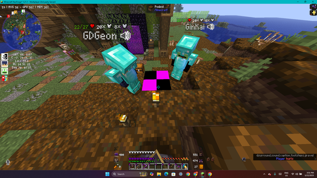
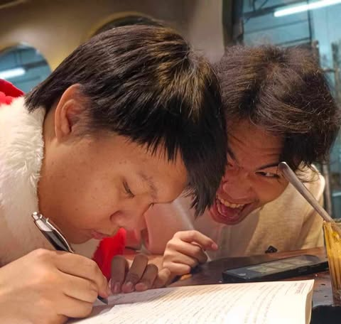
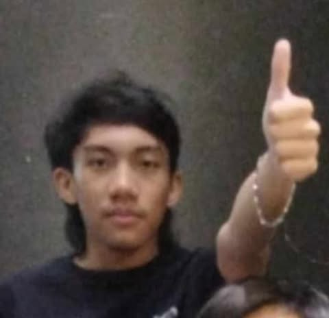
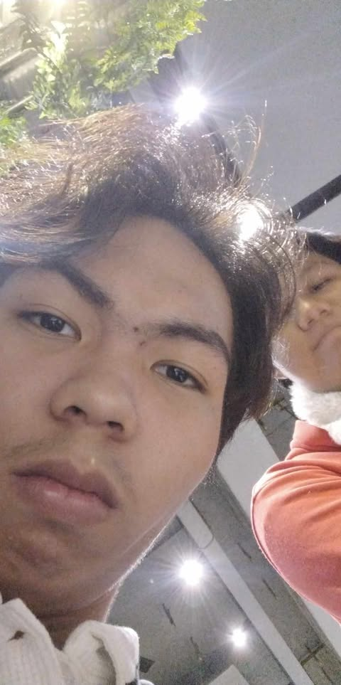
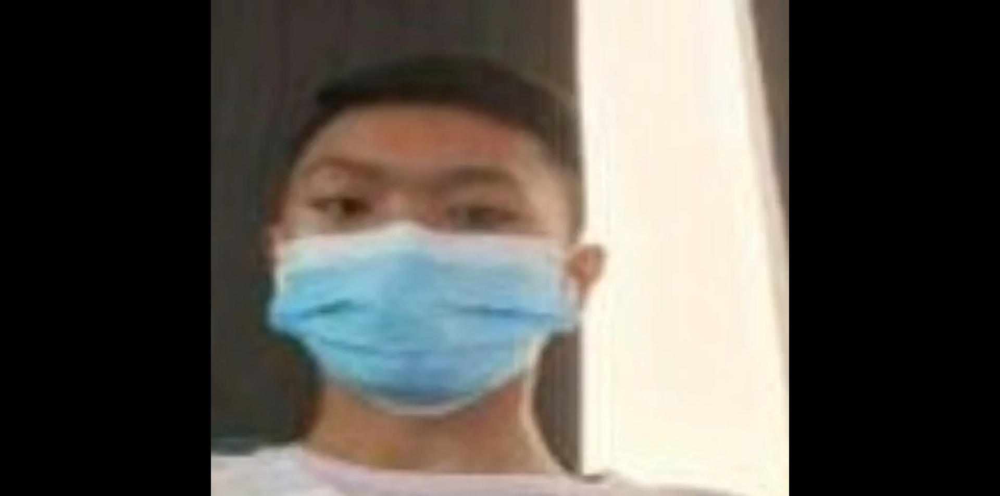

About Me!
Short description and Educational background
I am a self taught programmer who started with python during grade 5, my interest really started to kick off when I saw some python source code and thought "hey, that looks cool!"
Graduating from Baptist Center Christian School of Iloilo City Inc (BCCSI) I then took the Strengthened Technical Vocational Education Program (STVEP) here in Iloilo National High School. Originally, there was a specialization offered at STVEP called "electronic technologies" where we would be taught robotics and programming, but it was dissolved due to a lack of students who chose said specialization.
Never the less, I decided to continue under a different specialization in STVEP: Computer System Servicing (CSS) which was about hardware stuff, all that while continuing to learn python by myself. That all changed in grade 9 however, when programming became a viable specialization in STVEP once again.
Ever since, I have been blazing though creating projects left and right and having already learned programming standards and syntax for years, I had a considerable advantage when compared to my classmates and that gave me enough time to do whatever I wanted to do in programming class.
Hobbies & Interests
Aside from programming, I don't really have any "hobbies" per se. Which seems weird, but I think I just optimized myself to be the coding machine I want to be. However, just because I like to code doesn't mean its the only thing I do.
If I am not coding, I am playing games on my phone of laptop, there is no alternative. Thats basically all I do: code and play. I don't study for tests or go out (all that much anyways) and I seem to be perfectly fine. I have been described to have gotten my mother's brain and intellect being far above my age group and being more interested in the sciences. Which explains a lot as to why I don't have any other hobbies. Speaking of my mother.
Parents
She is my greatest example as to what a person should strive to be. Completely independent and smart. As I said before, I am described to basically be a "male version of my mother" because we both have the same type of "weirdness" that makes us sound like nerds. But I don't really care, I personally love being a "nerd" and my mother does as well.
Aside from that, she is a civil engineer who specializes in sanitization and was (and maybe will be again) based on the EU while also having worked in other countries outside as well. However, she has returned home for a while due to the pandemic and health concerns but she is doing well.
My father is also a civil engineer, much less renowned than my mother but both work together in local projects here in the Philippines. Aside from that my father has an interest in fish farming and has many trophies from out late champion fish: Molly
Friends
From elementary all the way to the start of grade 9, I actually had no friends. Hard to believe but all the people who would be considered my "friends" at the time would only go to me just so I can either help them in their studies or so they could bully or tease me. That all changed midway through grade 9 however, where I would meet my first real friend: Geon (already mentioned before) as well as what I would consider to by my forever friend group.
Blowing up in popularity from there, I became well known as the "student teacher" managing to even teach in some lectures and sometimes being a substitute for teachers if they couldn't make it in time for class. All the while my number of friends kept growing larger and larger, truely a step up from before.
Pictures of me and my friends
Bucari Trip
Us going to Bucari for a project, but also to relax

Grade 10 Graduation
Forever friend group graduating from grade 10

Inside Out Movie 2
Us going to see the Inside Out movie 2

Grade 9 Graduation
My favorite teacher and longest friend just taking a pic

Minecraft Stuff
My friends and I goofing around in minecraft

Missing Text
Missing Text

How did we become friends?
Me teaching them science and this happens
I don't even know
One of our friend's birthdays
Celebrating at SnR

👍
👍

Inside Joke
Whats the opposite of a mammal?
